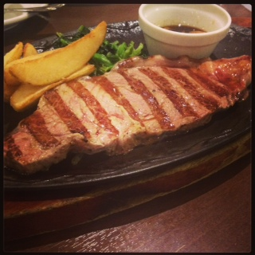
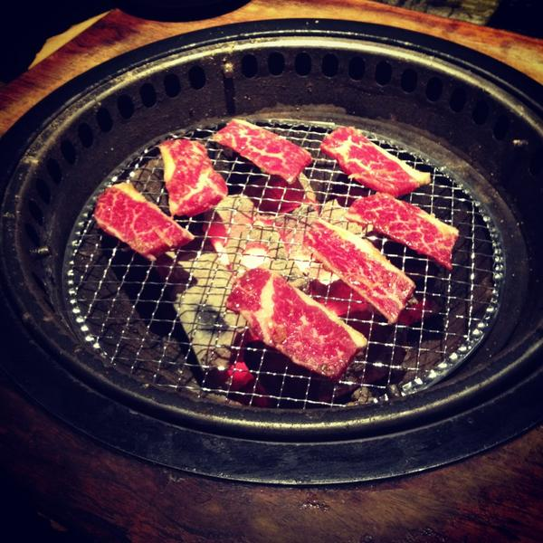
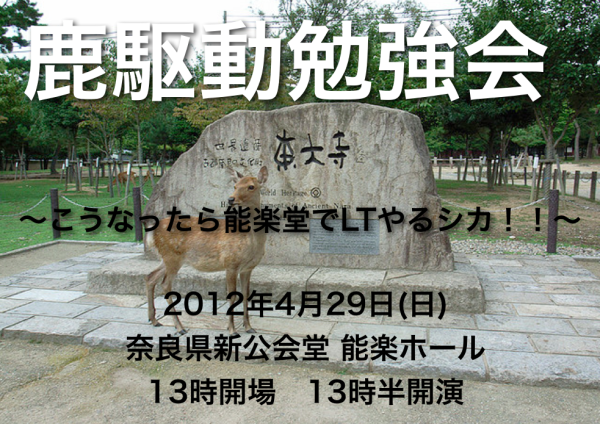
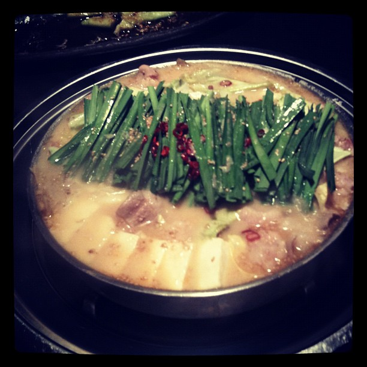
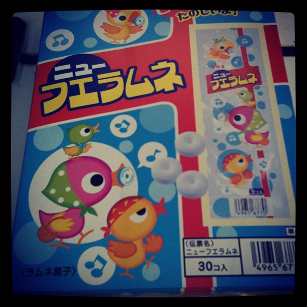

㈱ HOGE DRIVEN
トップ
主な実績
お知らせ
プレスリリース
採用情報
主な実績紹介

2012/03/30
ステーキ駆動 - なるほど！ザ・春の再演スペシャル！ あのステキな発表をもう一度 -
会場：フリュー株式会社

2012/10/27
やきに駆動 2.0 〜日本よ、これがHoge駆動だ〜
会場：フリュー株式会社

2012/04/29
鹿駆動勉強会 〜こうなったら能楽堂でLTやるシカ！！〜
会場：奈良県新公会堂 能楽ホール

2012/02/19
鍋駆動 テスト冬の陣 〜テイスティング駆動モグモグさせろください〜
会場：株式会社クロノス

2011/12/23
謎の忘年会改め「忘年会駆動年末発表しつくしセール 〜除夜のフエ聞きながら年越しラムネですね、分かります〜」
会場：株式会社プラグラム
2011/11/13
やきに駆動 秋のJava祭典スペシャル in 大阪〜こりん星
会場：株式会社クロノス
お知らせ
2013/04/01
ステーキ駆動で「鉄板ネタ」と間違えて「鉄板」を持ち込んだ人が8人を越えました。
2012/04/31
鹿駆動における参加者から寄せられた「鹿は食っていないじゃないか」というコメントについて緊急記者会見を行いました。
プレスリリース
2012/09/28
世界遺産でIT勉強会を開催する方法（＠IT自分戦略研究所）